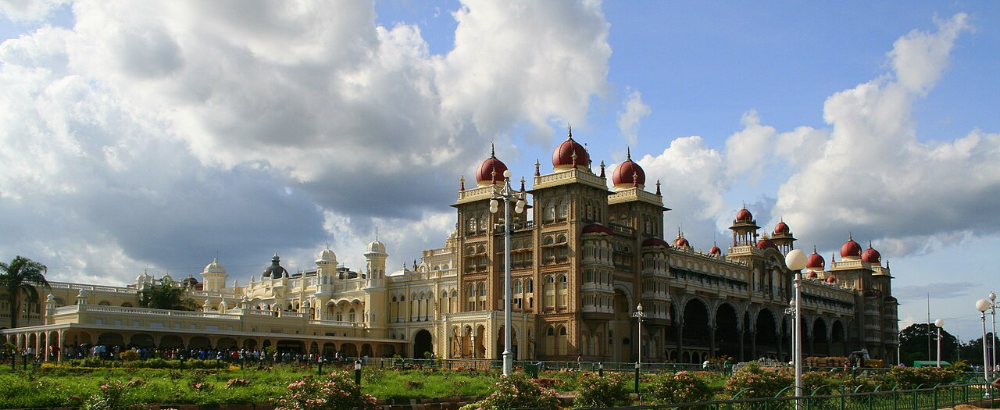
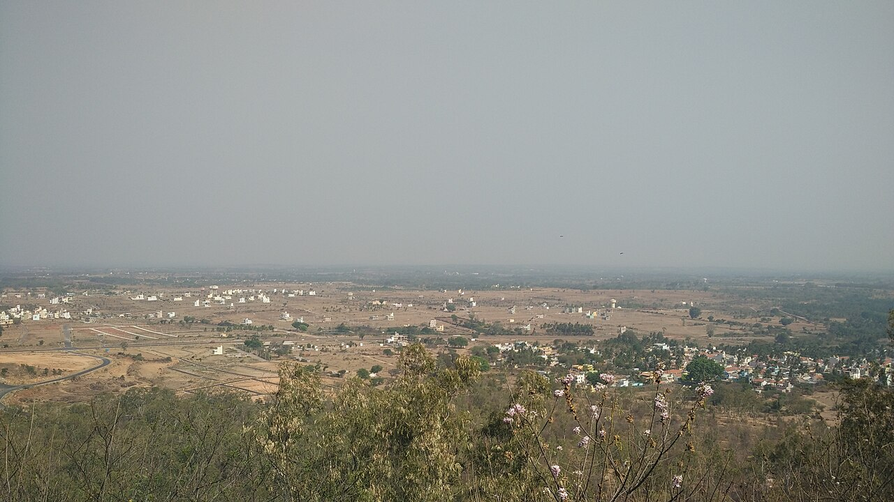
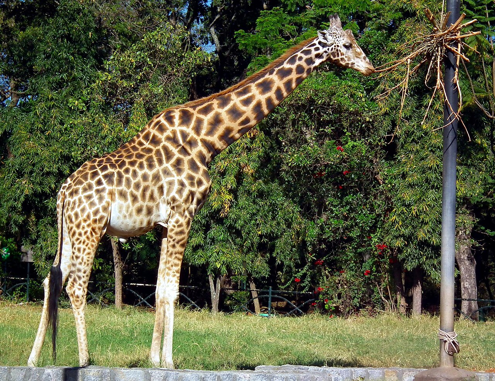
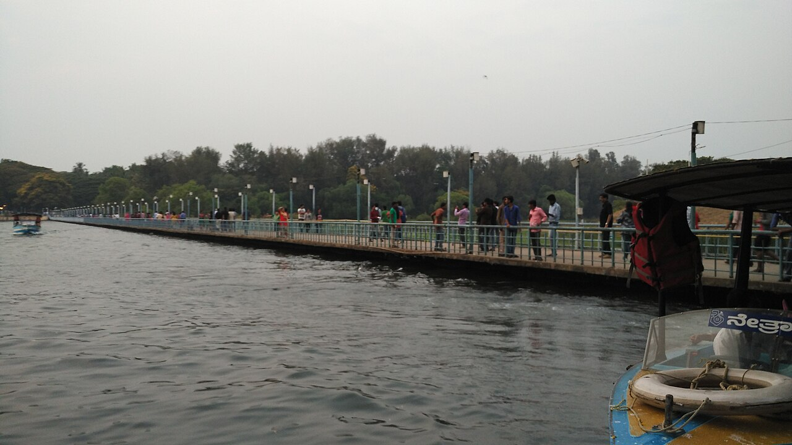
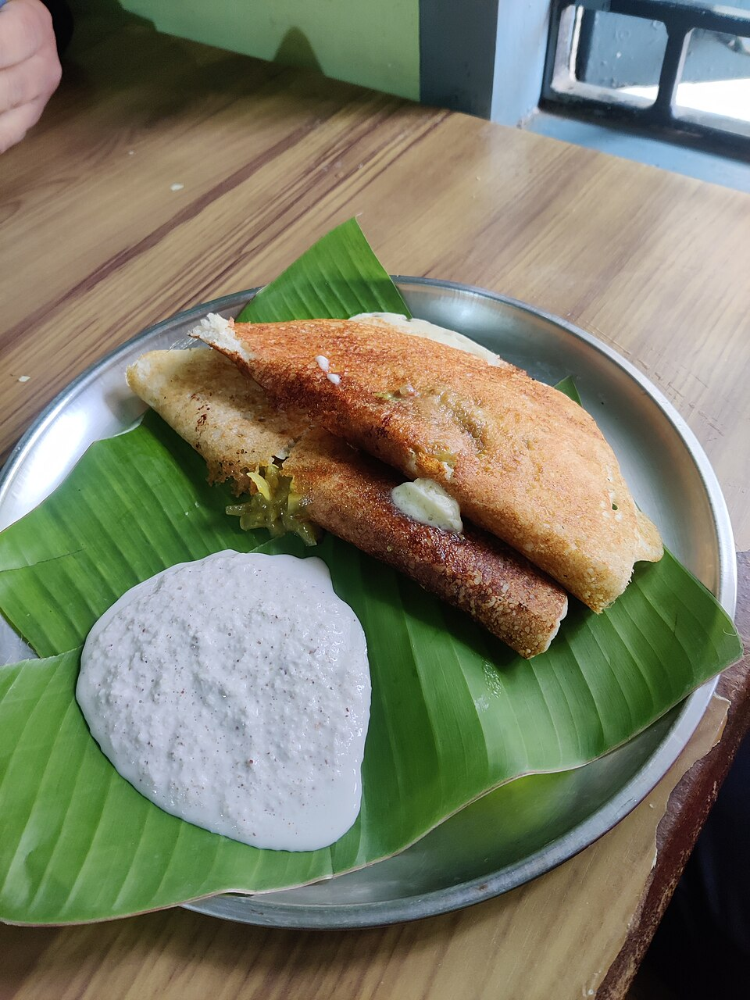
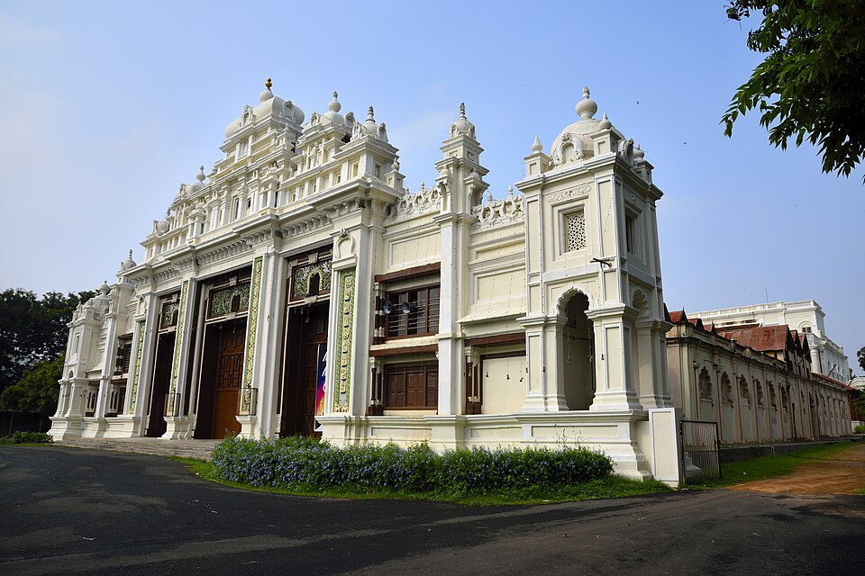
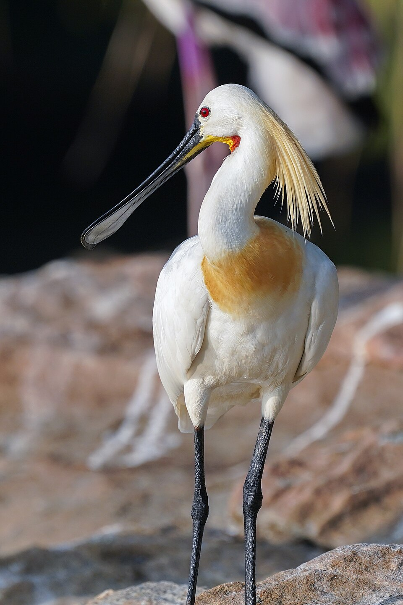
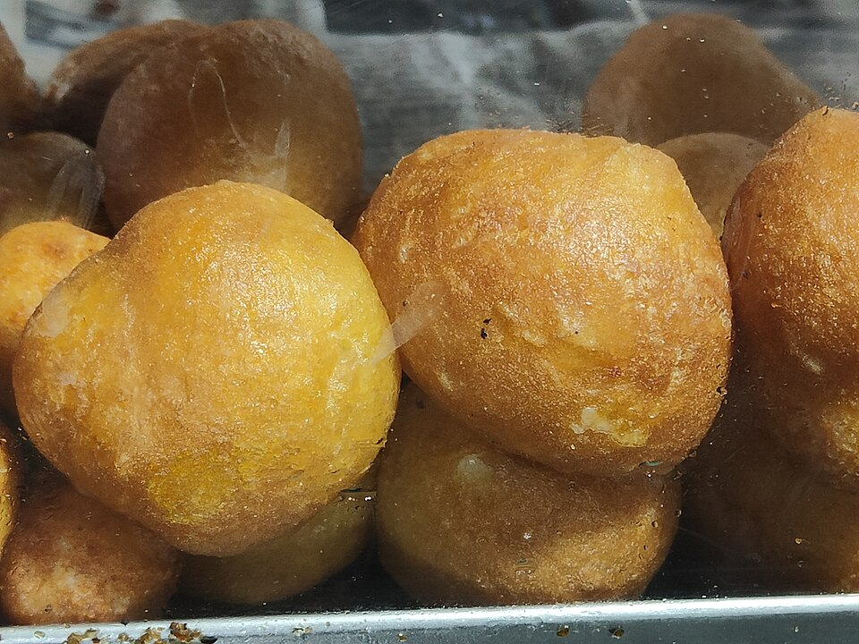

Mysore Palace
One of the most famous landmarks of Mysuru.
Discover the royal heritage, beautiful places, rich culture and unforgettable experiences of Mysuru.
Explore Mysuru
Mysuru, also known as the City of Palaces, is one of Karnataka's most beautiful and historic cities. It is famous for its royal heritage, architecture, culture, food and the grand Dasara celebrations.
One of the most famous landmarks of Mysuru.

A beautiful hill overlooking the city of Mysuru.

One of India's well-known zoological parks.

A popular destination known for its gardens and dam.

Try Mysuru's much-loved soft, buttery set dosa.

Discover art and traditional works in a historic palace.

A rewarding nature day trip near Srirangapatna.

A hot, savoury local-style snack to try with tea.
Mysuru has a rich cultural history shaped by the Wadiyar dynasty, traditional art, music, architecture and the famous Mysuru Dasara festival.
Find places, discover experiences and create your own Mysuru favorites.
Start Exploring